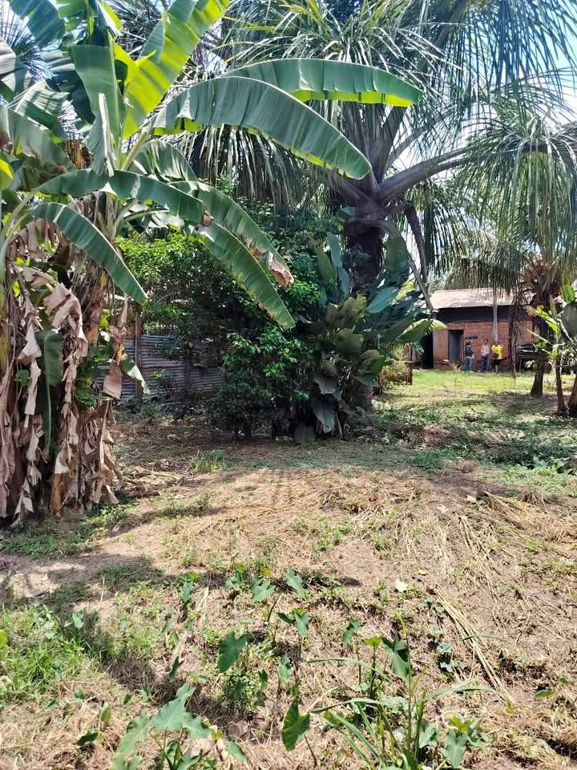

PEN37,000 480 m²

Por emergencia se remata un terreno de 480M2 ✅ Documentación " constancia de morador " registrado en la municipalidad - venta notarial . ✅ El terreno está ubicado en Asoc. de Moradores San Francisco de Asís a sólo 2 cuadras de la Av. Playwood entrando por el Km. 6:500 ✅ Tiene varios accesos por la carretera, por 2 de mayo , por Yarina ✅ Zona comercial en crecimiento ✅ Área ( 10x48) 💯Gran oportunidad !!!! - precio S/.37 mil soles !!!!! Invierte en un área de 480 M2 y no pierdas esta gran oportunidad !!! 📢📢 Informes : 9️⃣1️⃣0️⃣0️⃣9️⃣1️⃣8️⃣9️⃣2️⃣ ó 9️⃣7️⃣5️⃣5️⃣3️⃣8️⃣7️⃣5️⃣5️⃣